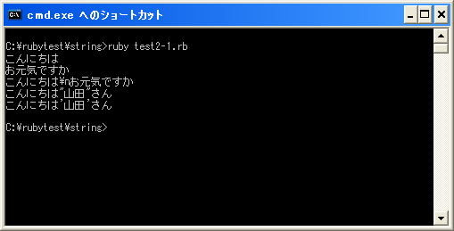

バックスラッシュ記法によるエスケープ
文字列の中にはキーボードから直接入力できない文字などを記述することが出来ます。例えば改行などです。このような特殊な文字を記述するために使われるのがバックスラッシュ記法です。(他のプログラム言語ではエスケープシーケンスなどと呼ばれているものです)。
バックスラッシュ記法は文字列をダブルクオーテーションで囲った場合とシングルクオーテーションで囲った場合で扱いが異なります。
ダブルクオーテーションで囲った場合
ダブルクオーテーションで囲った場合に使用できるバックスラッシュ記法は次の通りです。
| 特殊文字 | 意味 |
|---|---|
| ¥t | タブ |
| ¥n | 改行 |
| ¥r | キャリッジリターン |
| ¥f | 改ページ |
| ¥b | バックスペース |
| ¥a | ベル |
| ¥e | エスケープ |
| ¥s | 空白 |
| ¥nnn | 8 進数表記 |
| ¥xnn | 16 進数表記 |
| ¥cx | コントロール文字 (x は ASCII 文字) |
| ¥C-x | コントロール文字 (x は ASCII 文字) |
| ¥x | 文字 x そのもの |
代表的なものとして改行を表す「¥n」があります。例えば次のように使用します。
"こんにちは¥nお元気ですか"
この場合、「こんにちは」＋改行＋「お元気ですか」という文字の集合を表す文字列です。
また文字列の中で「"」を使用したい場合に「¥x」を使用します。これは文字「x」をエスケープすると言います。例えば「"」をエスケープするには「¥"」と記述します。
"こんにちは"山田"さん"
文字列の中に「"」を使用したい場合、そのまま記述するとどこからどこまでが文字列なのか分からなくなってしまいます。上記の場合は「こんにちは」と言う文字列の後に「山田"さん"」と言う文字が続けて記述されていると判断されてエラーとなってしまいます。このような場合に「"」の代わりに「¥"」と記述すると、「"」は文字列の始まりと終わりを表す記号ではなく単なる文字の「"」として扱われます。
"こんにちは¥"山田¥"さん"
また「¥」はバックスラッシュ記法の特殊な文字を構成する文字のため、文字列の中で「¥」を単なる文字として使用したい場合には「¥¥」と記述します。
"こんにちは¥¥n"
上記の場合、「¥¥」で単なる文字の「¥」となるため、その後に「n」が続いていても改行ではなく単なる文字の「n」となります。よって上記を出力すると「こんにちは¥n」と出力されます。
シングルオーテーションで囲った場合
シングルオーテーションで囲った場合は、基本的に文字列に記述された文字がそのまま文字として扱われます。その為「¥n」と記述しても「¥」と言う文字と「n」と言う文字の組み合わせとしか扱われません。
ただし文字列中に「'」を使用したい場合には文字列の区切りが分からなくなってしまため「¥'」と記述します。
'こんにちは¥'山田¥'さん'
また「¥」を使用したい場合にも「¥¥」と記述します。
'値段は¥¥100です'
サンプルプログラム
では簡単なプログラムで確認して見ます。
#! ruby -Ku
require "kconv"
print(Kconv.tosjis("こんにちは¥nお元気ですか"), "¥n")
print(Kconv.tosjis('こんにちは¥nお元気ですか'), "¥n")
print(Kconv.tosjis("こんにちは¥"山田¥"さん"), "¥n")
print(Kconv.tosjis('こんにちは¥'山田¥'さん'), "¥n")
上記のプログラムを「test2-1.rb」として保存します。文字コードはUTF-8です。そして下記のように実行して下さい。

( Written by Tatsuo Ikura )

著者 / TATSUO IKURA
初心者～中級者の方を対象としたプログラミング方法や開発環境の構築の解説を行うサイトの運営を行っています。